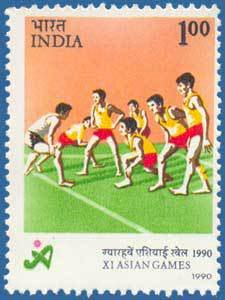

speculates in his book Nation At Play that kabaddi originated during the Vedic period (between 1500 BC and 500 BC).[4] There are accounts of both Siddhartha Gautama and Lord Krishna having played an ancient form of the sport.[12][13][14] According to the sport's origins, kabaddi is a sport developed centered on Jallikattu.[15][16][17] A player going to the opposition is treated like a bull. It is like taming a bull without touching it, as it is mentioned in Sangam Literature that the game called Sadugudu was practised since ages. There are also accounts of kabaddi having been played in Iran 2,000 years ago

In the international team version of kabaddi, two teams of seven members each occupy opposite halves of a court of 10 by 13 metres (33 ft × 43 ft) in the case of men and 8 by 12 metres (26 ft × 39 ft) in the case of women.[22] Each has five supplementary players held in reserve for substitution.[22] The game is played with 20-minute halves with a 5-minute halftime break during which the teams exchange sides.[22] During each play, known as a "raid", a player from the attacking side, known as the "raider", runs into the opposing team's side of the court and attempts to tag as many of the seven defending players as possible. The raider must cross the baulk line into the defending team's territory, and then return to their half of the field without being tackled. (If an attacker touches a defender and has not yet reached the baulk line, they do not need to reach the baulk line to score points and may return to their half of the court.)[27] While raiding, the raider must loudly chant kabaddi, confirming to referees that the raid is completed on a single breath without inhaling. Each raid has a 30-second time limit
There are four major forms of Indian kabaddi recognised by some amateur federation.[8] In Sanjeevani Kabaddi, one player is revived against one player of the opposite team who is out. The game is played over 40 minutes with a five-minute break between halves. There are seven players on each side and the team that outs all the players on the opponent's side scores four extra points. In Gaminee style, seven players play on each side and a player put out has to remain out until all his team members are out. The team that is successful in outing all the players of the opponent's side secures a point. The game continues until five or seven such points are secured and has no fixed time duration. Punjabi kabaddi is a variation that is played on a circular pitch of a diameter of 22 metres (72 ft)